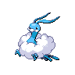

| My Top 5 | Generation | |
 Chatot |
I love Chatot. Its design is very cute and I liked seeing it around in Legends Arceus. |
4 |
 Mudkip |
I've been attached to Mudkip ever since I became interested in Pokémon. I used to play "Pixelmon", a Minecraft version of Pokémon, and it was my first ever starter. |
3 |
 Swampert |
Similarly to Mudkip, this is just the final evolution. I also like Swampert due to it being strong in gameplay (at least when I used it in Poké Emerald. I liked grinding levels to evolve and seeing it change. |
3 |
|
 Altaria |
Altaria is similar to Mudkip, being one of the first Pokémon I was introduced to. In addition, I just like its design of a cloud-bird. |
3 |
 Drifloon |
Drifloon and its evolution Drifblim have always been apart of any Pokémon team I make. I like its design, and the moves it could learn always makes for an easy time against other Pokémon. |
4 |